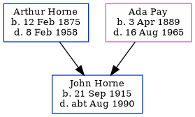

John Albert Horne 1915 - c1990
[ Home ] | [ Calendar ] | [ Surnames Index ] | [ Errors ] | [ Family History ]A railway carriage clerk and the child of Arthur Horne (a smack owners's assistant) and Ada Pay, John Horne, the second cousin twice-removed on the father's side of Nigel Horne, was born in Ramsgate, Kent, England on 21 Sept 19151,2,3,4.
During his life, he was living at 12 King Edward Road in Ramsgate on 19 Jun 19211 - less than a mile from his aunt Rosa Horn, mother Ada Pay who were living at 77 Hardres Street in Ramsgate and his first cousin once-removed on his father's side Henry William who was living at 29 Sussex Street in Ramsgate - and on 29 Sept 19392; at 5 Paragon Street in Ramsgate in 19538 and in 19555; at 26 Lorne Road, St Lawrence, Thanet, Kent, England in 19639 and in 19656; and at 4 Stanley Road in Ramsgate in 19747.
He died c. Aug 1990 in Thanet4.
Parents
- Arthur Albert was born on 12 Feb 1875
- Ada Caroline Eleanor was born on 3 Apr 1889
Citations
- 1921 Census Of England & Wales - Findmypast (was age 5 and the son of the head of the household)
- 1939 Register - Findmypast (was the son of the head of the household)
- England & Wales births 1837-2006 - Findmypast
- England & Wales deaths 1837-2007 - Findmypast
- 1955 Kelly's Thanet Directory
- 1965 Kelly's Thanet Directory
- 1974 Kelly's Thanet Directory
- 1953 Kelly's Thanet Directory
- 1963 Kelly's Thanet Directory
Media
1955 Kelly's Thanet Directory

1965 Kelly's Thanet Directory

1974 Kelly's Thanet Directory

1974 Kelly's Thanet Directory
1953 Kelly's Thanet Directory

1963 Kelly's Thanet Directory

1939 Register Transcription - TNA-R39-1767-1767C-005-17
England & Wales births 1837-2006 - BMD/B/1915/4/AZ/000634/022
England & Wales deaths 1837-2007 - BMD/D/1990/7/77920311
1939 Register Transcription - TNA-R39-1767-1767C-005-15
Royal Artillery attestations 1883-1942 Image - GBM-ROYALART-1596601-1597600-00005
1921 Census of England & Wales - GBC/1921/RG15/04480/0263/06
Family Tree
Map
Generated by ged2site. Last updated on Jul 3, 2024
Known Issues
Parent Arthur is listed in the residence for 1923, but this child is not